Nombre de Anomalía
Descripción detallada.
Arrastra para rotar el modelo 3D
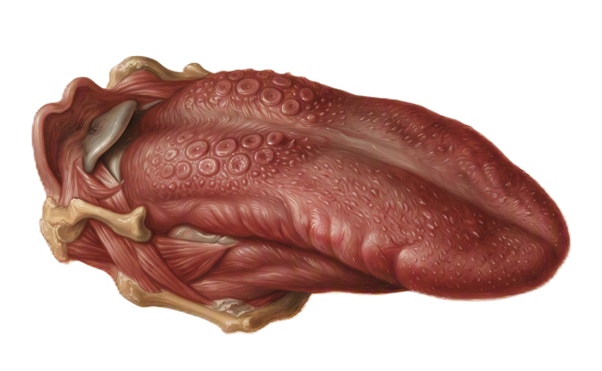
lips Anatomía de la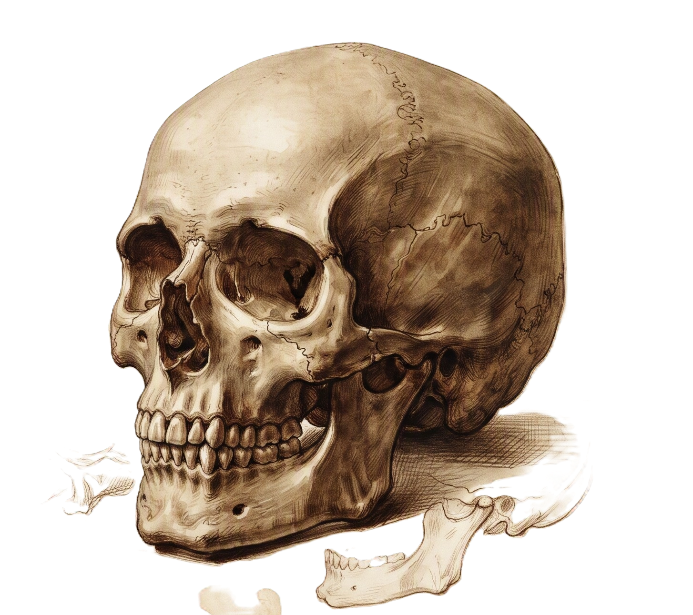
skull Anatomía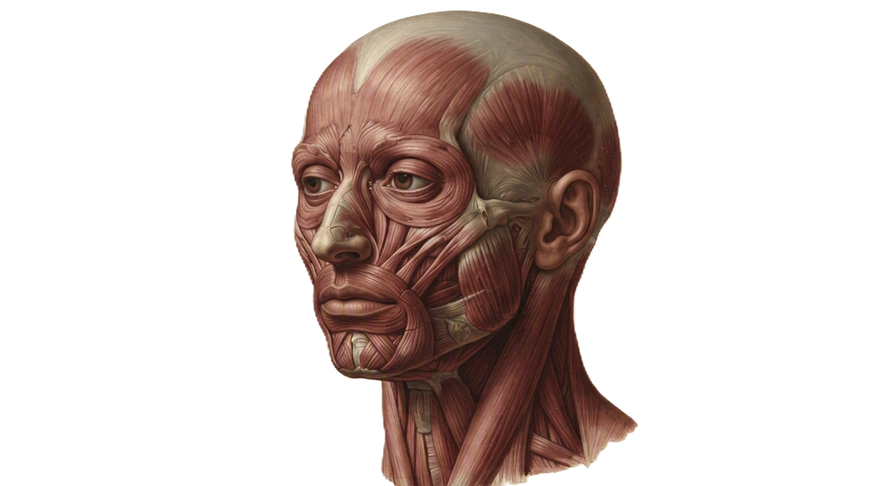
face_6 Anatomía músculos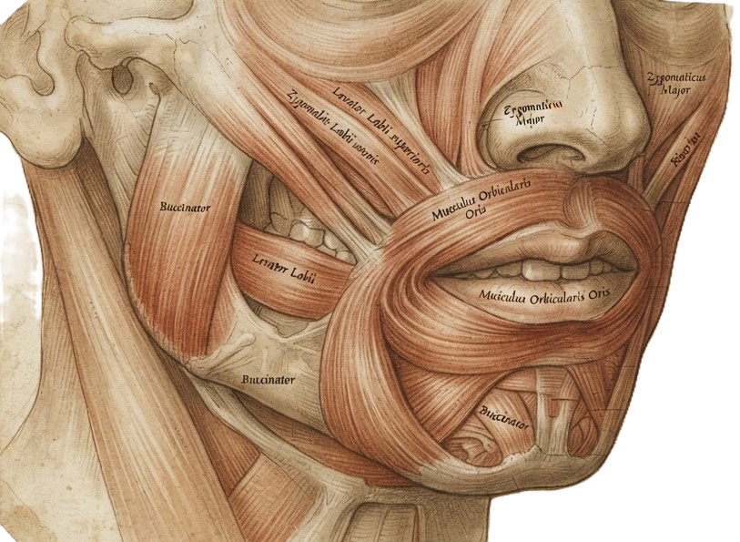
sentiment_neutral Anatomía músculos de la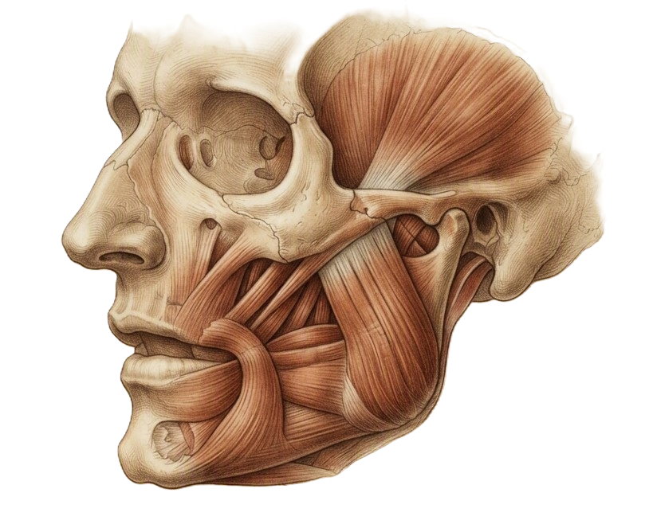
dentistry Anatomía músculos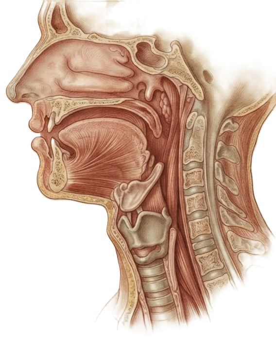
orthopedics Anatomía músculos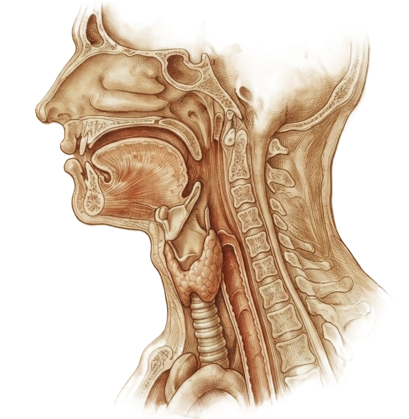
orthopedics Anatomía músculos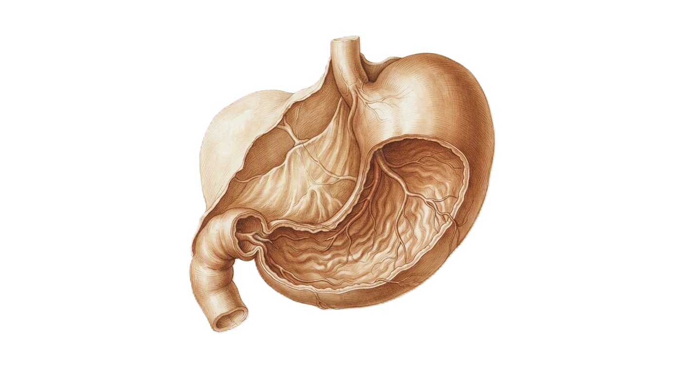
gastroenterology Anatomía músculos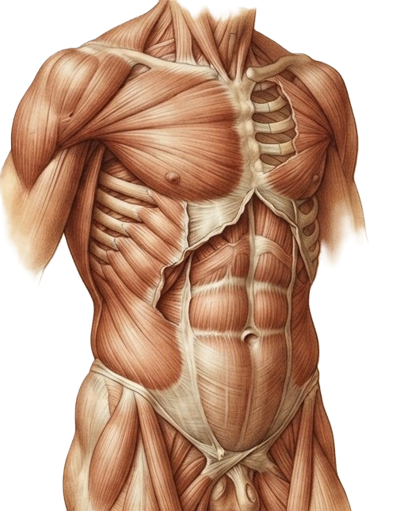
skeleton Cuadrantes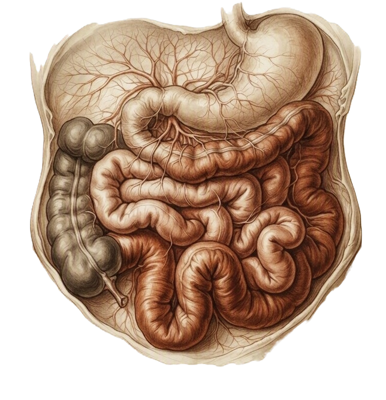
gastroenterology Anatomía del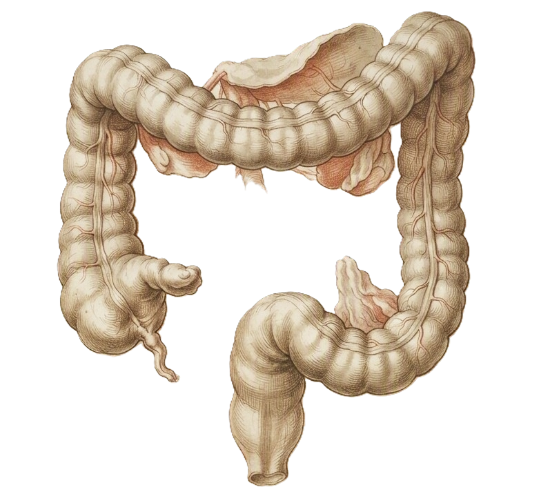
gastroenterology Anatomía del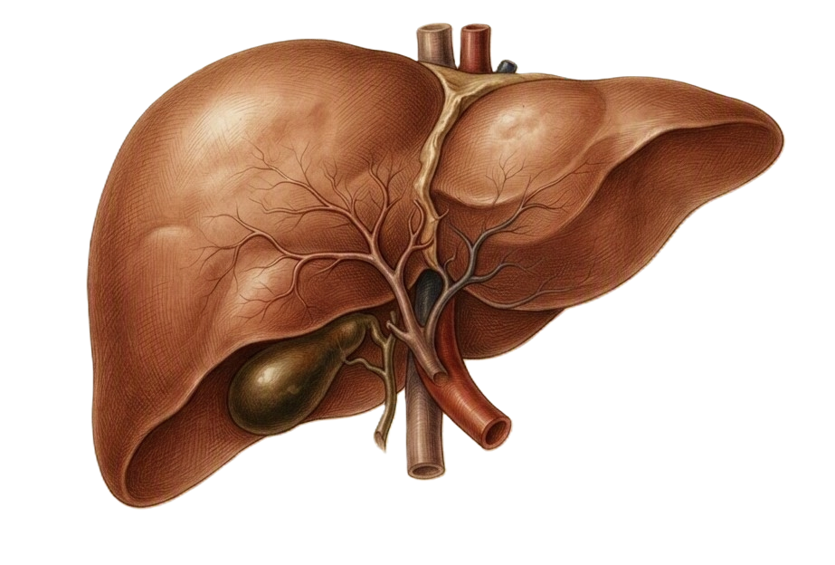
hematology Lóbulos del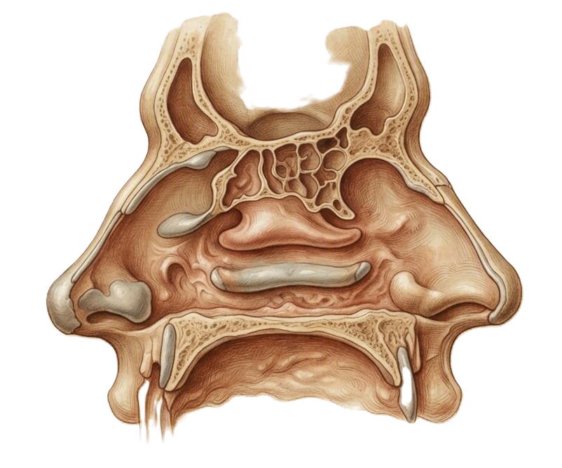
oxygen_saturation Anatomia de la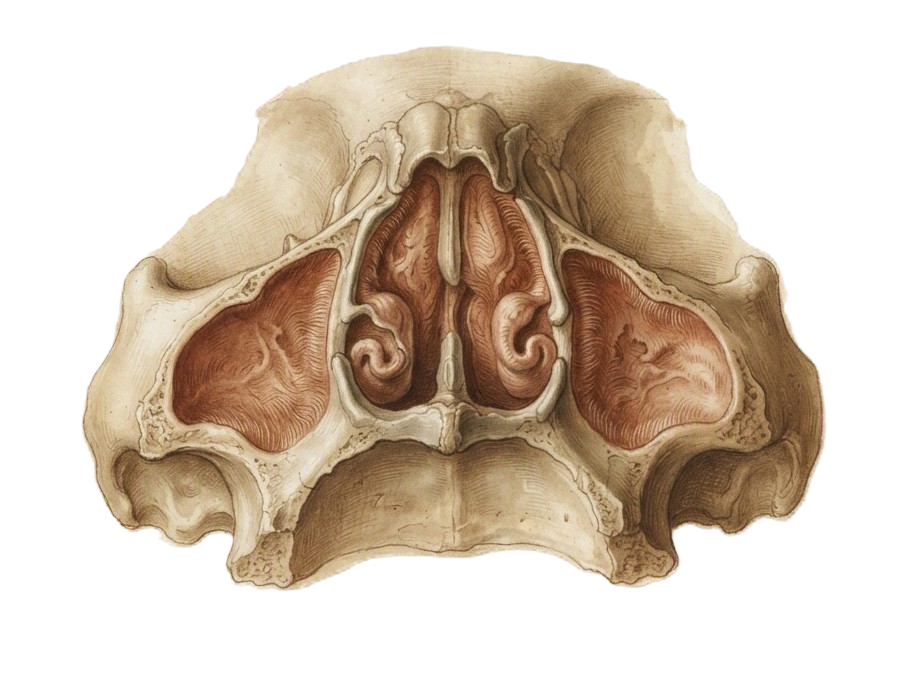
ent Anatomía de los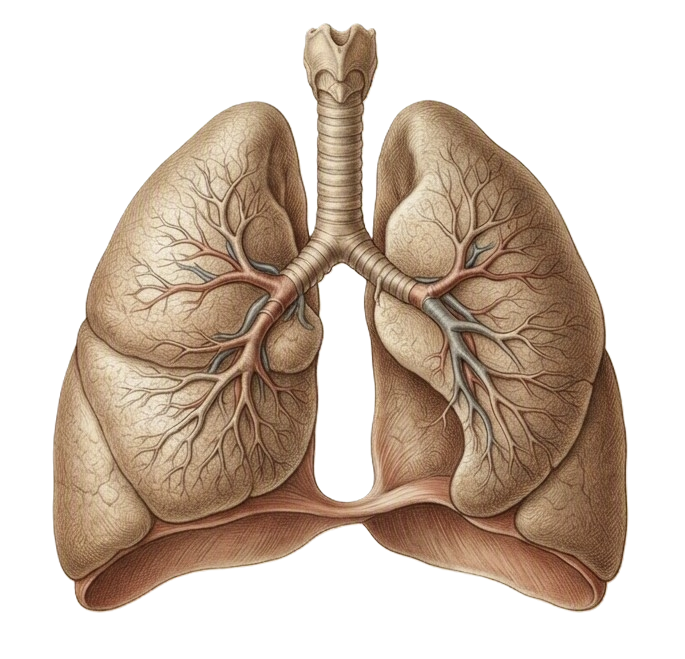
pulmonology Anatomía de